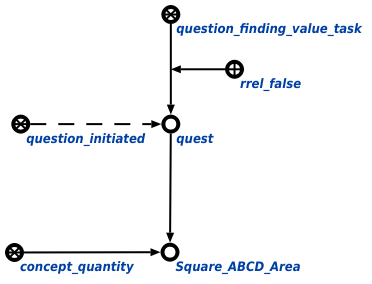

Задачей агента применения стратегий решения задач является применение стратегий решения задач в рамках конкретной задачи. Данный агент инициируется при условии появления в памяти вопросной конструкции, соответствующей либо запросу поиска значения неизвестной величины или идентификации неизвестного числа, либо запросу проверки истинности утверждения, причём и тот, и другой запрос должны быть уточнены атрибутом несработавшего действия. Единственным аргументом запроса является или узел величины, значение которой неизвестно, или узел числа, идентификация которого неизвестна, или атомарная формула, истинность которой нужно проверить. Пример вопросной конструкции представлен ниже:
